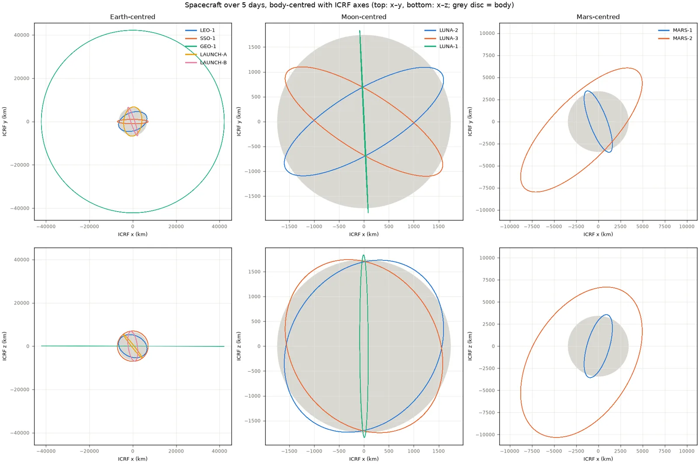
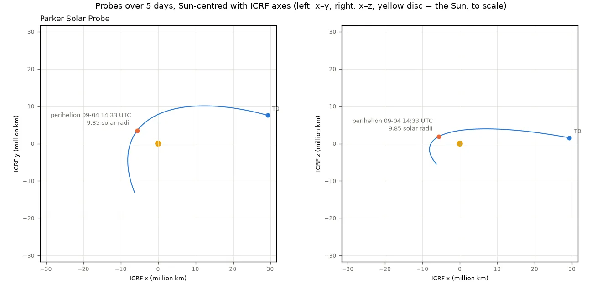
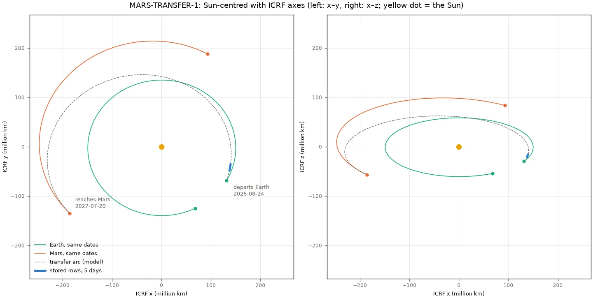
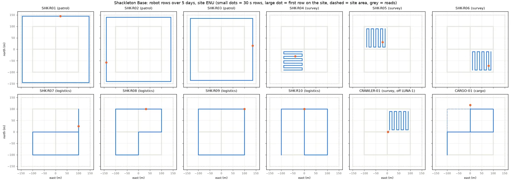
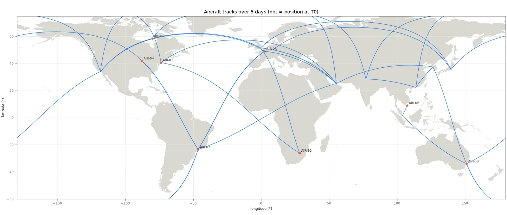
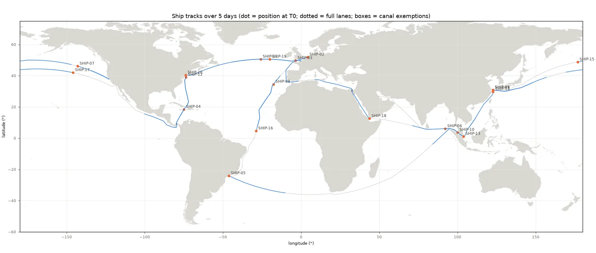
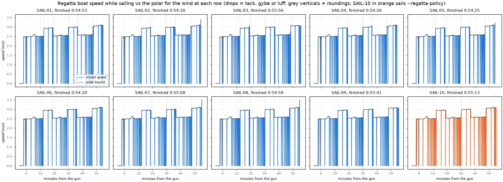
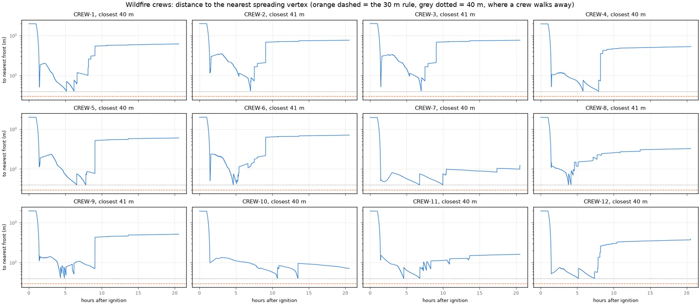
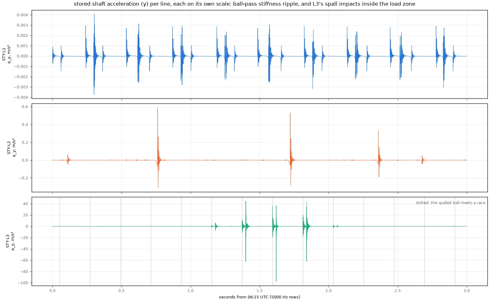
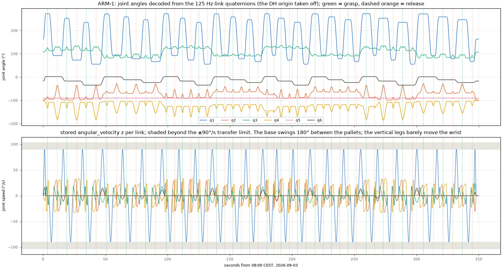

Soloc: Solar System Localizer
Purpose & Design
At the core of any physical system are the questions of: where am I, and when is it? The 'I' in this case refers to anything from atoms & molecules up to planets, galaxies and so on. On a factory floor the answer is in meters from a corner of the building. A ship gives it as latitude and longitude in GPS time, and a lunar orbiter in kilometers in a frame that turns with the Moon. The opportunity, and challenges, start when these systems share a single digital definition.
The PRL team created Soloc to unify how we answer both questions across the solar system. It is meant to work the same way for a ball bearing spinning inside a gearmotor and for a probe skimming the Sun. What we found in doing so, is that this tool has given us the ability to do much more. My goal in this post is to provide a high-level view of the Soloc ecosystem and the capabilities that surprised us: I’ll start with the capabilities, and provide an appendix with a brief technical description of how the ecosystem works today.
"Soloc feels like the GPS for the solar system." — an early Soloc tester
Why Soloc
To understand why Soloc was created, it is first important to understand why enabling intelligence, natural, artificial or any other type, over physical assets, entities, data, operations and so on is difficult. Reasoning consistently and verifiably, is even more challenging.
There are two trends that the PRL team constantly encounters: 1. increase in interconnected autonomous systems, resulting in emergent/cascading failure modes (read more about The Autonomy Paradox), and 2. integration of intelligence into all levels of decision making. We have found that most reasons for first trend is a half-baked implementation of the second trend. The challenge with implementation is that day-to-day reasoning for a single individual is quite different to reasoning for a large project; however, both types require the understanding of position and time, on different scales.
My preferred way to introduce the two types of reasoning mentioned above is with the following anecdote: If I am told to find a banana, I can reason over the data provided to me via my senses and control my body to look for a banana. However, if someone asked me to farm bananas and distribute them to the world’s population, I could not achieve that on my own. This is fundamentally why we form groups, organizations, and countries. And for an effective group activity, I would need to coordinate a heterogeneous set of individuals, operations, and machines, planning for uncertainties, adaptations and redundancies. A robust plan requires an understanding of exactly where every individual, operation and machine is in space and time (including off-world, astronauts and future Martians deserve bananas too); Something similar can be said for finding an individual banana, which requires my brain to understand, either explicitly or implicitly, the pose of my body at all times and localization of data-streams from my senses. And, when something inevitably goes wrong, the understanding of space and time at all required scales would allow me to provide a precise & robust recovery plan.
Next it is important to understand the current state of describing space and time. Physical Localization is usually solved locally, with respect to some defined reference frame. The robotics industry has rigid transform trees, and aviation has WGS84. Space missions use SPICE kernels and inertial frames. Each stack is designed excellently. Crossing the boundaries causes issues: a unit mix-up, a timescale that is off by 37 seconds, a frame whose rotation gets applied twice, or numerical precision loss. As robots and other entities leave the lab for the seabed, the lunar surface and the space between planets, more and more of the interesting work happens across these boundaries. Fundamentally, there is no data uniformity. Fusing many different data-streams typically means rolling a custom solution that cannot be easily queried or shared with collaborators, and furthermore, it causes many issues during training or use of modern models to provide advanced capabilities.
Therefore, we need to unify physical localization of data across all space and timescales in a manner that:
- Integrates well with existing industry tooling (SPICE kernels, GPS, robotics rigid transform trees, geospatial data and natural language)
- Is easily queried by both humans and algorithms
- Is easily partitioned and shared with collaborators
- Can natively combine real data with simulated (either physics-based or otherwise) data
Soloc is built to address all of that.
Exploration of Capabilities
To explore the design end-to-end, we spun up a local soloc server to simulate a span of five-days (September 1st-6th 2026) that combined several scenarios. In total, it defines 1,738 entities across the Earth, the Moon and Mars and in orbit around the sun. They range from spacecraft and airliners down to the bearing balls inside a factory gearmotor. One of the entities is real: NASA's Parker Solar Probe, using data from JPL Horizons' state vectors. In addition, we were able to fuse in geospatial data to create what we call arenas; these arenas create representative scenarios of wildfire fighting, and a sailing regatta. While this end-to-end exploration primarily simulated entities, each scenario could, just as easily, have been pulling from real sensors, operators, robots, vehicles and so on.
Solar System: Earth, Moon, Mars +
This scenario created seven orbiters, across Earth, the Moon and Mars, and two rockets launch: one from Kennedy Space Center in Florida and one from Andøya Spaceport in Norway.

Further out, Parker Solar Probe reaches perihelion at 9.85 solar radii and 191 km/s. Its data was easily transferred from JPL Horizons to the Soloc format. Meanwhile, MARS-TRANSFER-1 is cruising to Mars on a Sun-centered conic transfer.


The star of this scenario is SELENE-1, which lifts off from Kennedy Space Center and flies a patched-conic transfer to land at Shackleton Base on the lunar south pole. On the way, its parent frame changes from the launch pad to the rotating Earth, then to the Earth-centered inertial frame, then to the rotating Moon, and finally to the base itself. An hour after touchdown, the rover CARGO-01 that rode along on SELENE-1 steps off onto the base and begins performing its duties.
Surface Mobile Robot Fleets
In this scenario, four chosen facilities host ten robots each. Two are spaceports, one is mission control in Houston, and one is Shackleton Base on the Moon. On every site, the mobile robots are assigned an arbitrary trajectory to represent possible operations, all in meters wrt. to the site's own east-north-up frame. There are also fourteen hull crawlers moving around their host spacecraft.
The rover CARGO-01 shows reference frame parenting. It drives to the launch pad at KSC, boards SELENE-1, rides on the hull to the Moon and steps off an hour after touchdown to join the simulated lunar operations. CARGO-01 is reporting as a normal mobile robot would be, using local reference frames and creating static transform trees, but its chain runs all the way from Florida to the lunar south pole.

Aircrafts and Marine
This scenario shows the simplicity of integrating readily available data on terrestrial vehicles. Ten airliners fly great-circle legs between 15 real airports, and twenty ships work eight sea lanes, from the Strait of Malacca to the Panama Canal. Aircraft report in UTC and ships in GPS time, the way their real systems do. Soloc keeps both as received, so a question like "which ship was under which flight path at 14:00 TAI" can be easily queried over the entire ledger.


Sailing Regatta
The sailing regatta is the first of two arenas, scenarios in which entities are treated like chess pieces and are moved by decision makers rather than purely simulated. Ten sailboats race a three-lap windward-leeward course in Bedford Basin, Halifax. Every 10 seconds each boat's tactician reads the race back out of soloc: the boats, the marks and the wind from three met buoys. It then chooses a heading, a tack or a gybe. Wind data for this scenario was simulated in a manner that shows how vector fields of any kind can be easily integrated into soloc-ledgers, for any purpose. This also enables physics-based numerical simulation via techniques that solve ordinary-differential-equations.

Wildfire Fighting
In the Squamish Valley, British Columbia, a fire ignites at 14:00 PDT and spreads over pre-determined fuel zones, bounded by the river and a power-line corridor. Similar to the sailing regatta, this scenario uses geospatial data to create an arena. Every five minutes an incident commander reads the perimeter of the fire, and the positions of twelve crews, and commands them to dig containment lines. The perimeter vertices, the crews and each 50 m trench they finish are all entities in the same ledger. In this scenario, we experimented with letting a modern LLM act as the incident commander.

Factory Digital Replica
In a plant in Steyr, Austria, three conveyor lines move 1,350 boxes through an eight-hour shift. Each box changes parent from Machine A to Machine B (conveyor belt) to Machine C. Below that level the simulation goes further: every shaft, cage and bearing ball in the drive gearmotors is an entity that has a physics-based dynamics model. It reports at 5s through the shift and at 20 Hz in a ten-minute burst. The shafts also record at 5 kHz in eight ten-second captures.

Robot Arm
In a cell in Odense, Denmark, a UR10e-class six-axis arm unstacks 24 boxes from one pallet and stacks them on another. The arm is stored the way ROS (a library often used in the robotics ecosystem) stores it, as a transform tree: each link is a row parented to the previous one, at 125 Hz. A held box is the deepest chain in the study, at ten hops from box to Earth’s astronomical reference frame.

Up Next for Soloc
This is the first showcase of what Soloc is capable of. As with any new technology, there are many lessons learnt and challenges remaining to solve; a brief list of those is provided in the appendix. The PRL team is already working with partners to further develop the capabilities of the ecosystem, and resolve open questions in a manner than benefits real use cases. Internally, the PRL team is using the ecosystem as a standard for how we perform simulations for all projects.
Some of the next steps for the ecosystem are:
- A debugging and visualizer tool for inspecting frames, chains and poses, growing out of the viewer shown above
- Ledger performance benchmarks and storage optimizations
- Ecosystem integrations: ROS 2 tf2, GPS-to-spacetimestamp ingestion, and ArcGIS / GeoArrow
- Integration with real hardware, and hardware-in-the-loop capabilities
- A growing schema library beyond the first-party Entity schema
Soloc is open source under the Apache 2.0 licence. If you are working on localization, multi-robot systems, or anything that has to agree on where and when, please reach out. Soloc has the potential to enable many emergent capabilities, especially relating to the creation of truly autonomous systems; how it gets there is with an open source community of contributors from many industries and backgrounds.
Appendix: Technical Bits
The Spacetimestamp
The core of soloc is one record, the spacetimestamp. A spacetimestamp is one row that pins a pose (position and orientation) to an explicit parent frame, at an explicit instant on an explicit timescale, in native units. Tag any data stream with spacetimestamps and it can be addressed in space and time, then compared, transformed and merged with anyone else's. The underlying technology we rely on is the apache arrow format, which we found to be the most effective for handling large quantities of data.
An illustrative row. Optional columns carry velocity, angular velocity, acceleration, mass, dimensions and a 6×6 covariance.
Reference Frame Topologies
Every row in a ledger contains its parent reference frame, via the spacetimestamp, the ledger builds a frame tree with just the data itself. ie. a ledger defines it’s reference frame topology: a collection of reference frame trees that all have a SPICE defined astronomical reference frame. A robot is parented to its site, the site to the rotating Earth, and the Earth is resolved against the solar system by NASA's SPICE ephemerides. Parents can change over time: a rover boards a rocket, the rocket lands on the Moon, and the rover steps off onto a lunar base. Pick an entity below to trace its chain.
Querying, Federation, Collaboration & More
A core design philosophy of Soloc, with advice from the astronomy community, is that observations must stay in their reported frame, units and timescale. Any transform to an inertial frame (ICRF, GCRF) or a body-fixed one happens at query time, through a physics engine backed by NAIF SPICE kernels. Nothing is lost to an early conversion, and when the ephemerides improve, every past row improves with them. This also helps with historical analysis and collaboration.
Every batch is an Apache Arrow
RecordBatch, so the ledger reads
straight into Python, Julia or anything else that
speaks Arrow. A ledger can be served over Arrow
Flight or as a .arrow IPC file, which makes
federated collaboration simple. Each operator
runs their own server or hosts their own ledger,
and they can exchange streams of RecordBatches or
large IPC files. The code snippet below shows the
simplicity of writing a new entity to a
soloc-ledger.
client = SolocClient("grpc://localhost:50051")
site = mint(KIND_SOLOC, "example.org", "test_range")
rover = mint(KIND_SOLOC, "example.org", "rover_1")
# the site sits on the rotating Earth, in km
buf.append(site, IAU_EARTH, [6378.137, 0, 0], [1, 0, 0, 0], t0)
# the rover drives across the site, in metres
for k in range(5):
buf.append(rover, site, [10.0 * k, 0, 0], [1, 0, 0, 0],
t0 + k * 10**9, units="m", velocity=[10, 0, 0])
client.put(buf.flush())
client.current_state([rover]) # -> [40, 0, 0] m, on the siteChallenges & Lessons Learnt
This is a list of the most important lessons learnt over the initial development of the Soloc ecosystem:
- Timescales are worth being explicit about: We used UTC, GPST, TT and TAI side by side. Normalising to TAI on append, and using only fixed-offset scales, put a child's epoch and its host's on the same nanosecond, which removed a whole class of off-by-seconds bugs
- Cadence/Sample Time is a modelling decision: Different scenarios require a different rate of recording to preserve fidelity without loss. The tradeoff is compute and storage required. This is true for all computer systems, but especially true for Soloc, which deals with physical data at many different space and time scales. Good modelling is therefore required to appropriately capture all scenarios
- Zero-order hold needs Further Work: A row framed on a moving entity resolves through that entity's latest pose at or before it. Hosts therefore have to report at least as often as their passengers
- Memory is finite, and data can pile up quickly: The full study holds about 1.9 GB in the server. A rolling-window memory limit is the simplest implementation for how to handle this. About 50% of the memory cost is due to un-used covariance datums, which are important for usecases such as satellite conjunction and other stochastic simulations
- Composability pays off: These scenarios can be performed individually and merged back row for row. We could iterate on the factory without rerunning the solar system. This also translates to data being generated from real sensors; two computers can store their own ledgers and combine later when a decision needs to be made that requires both data-streams